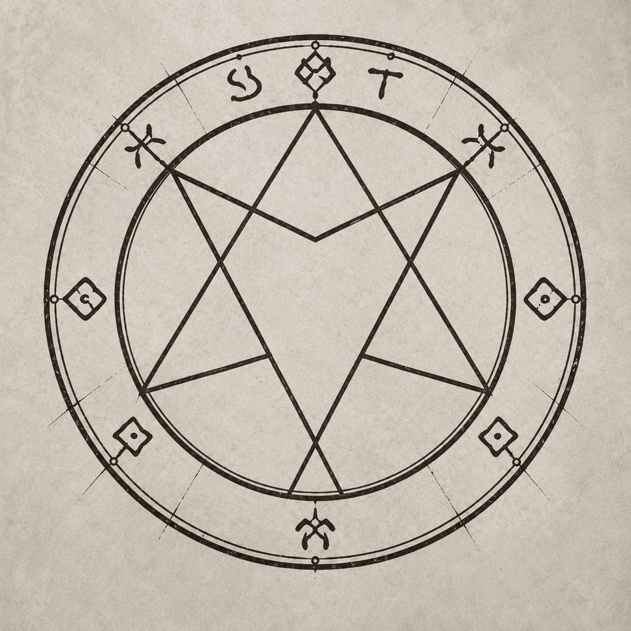
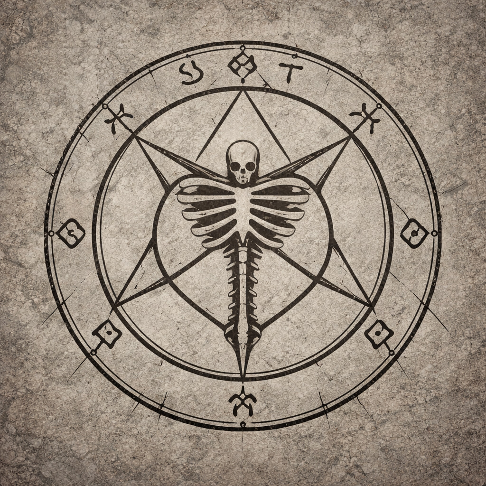
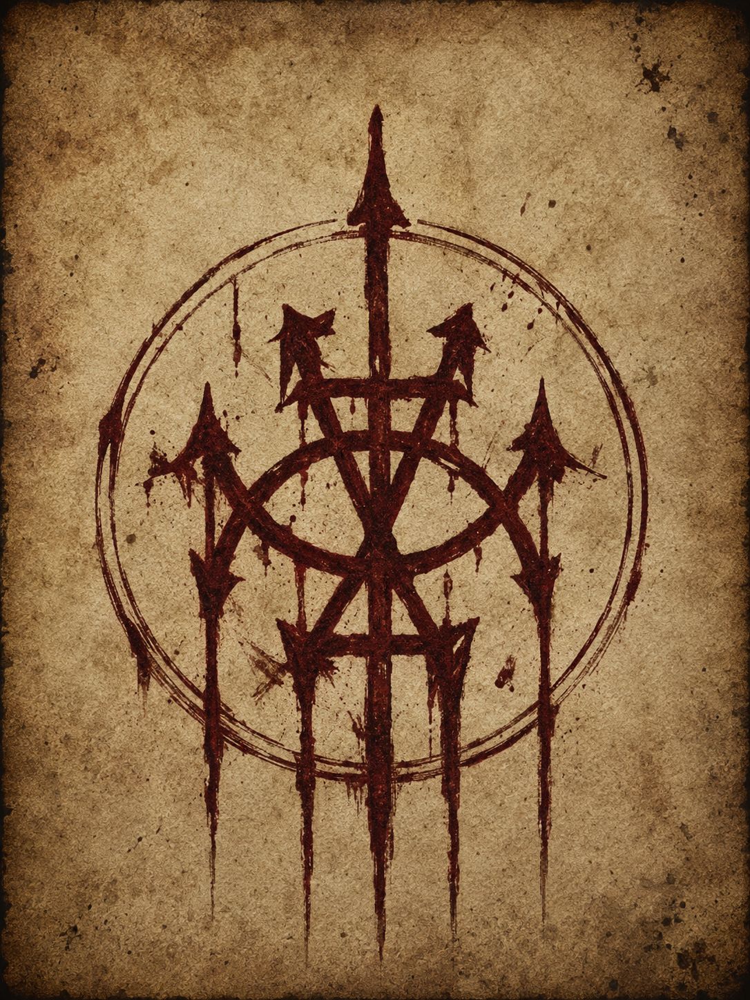

Simboli
Segni riconosciuti durante la campagna.

Varek Thorm
Simbolo di Varek Thorm
La variante associata a Varek, segnata dallo scheletro. Un dettaglio che lega il nome Thorm a morte, forma e trasformazione.

Otmar Van Verschuer
Simbolo del Dr. Otmar Van Verschuer
Sigillo associato al direttore dell’Istituto di Biologia Ereditaria di Portogrigio e agli appunti ritrovati nei sotterranei dell’Accademia.